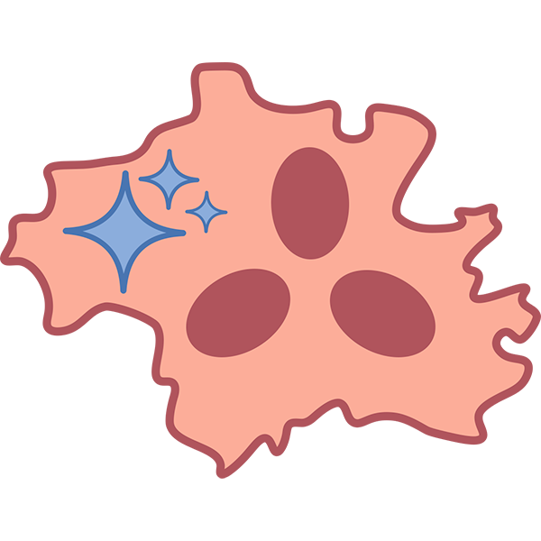
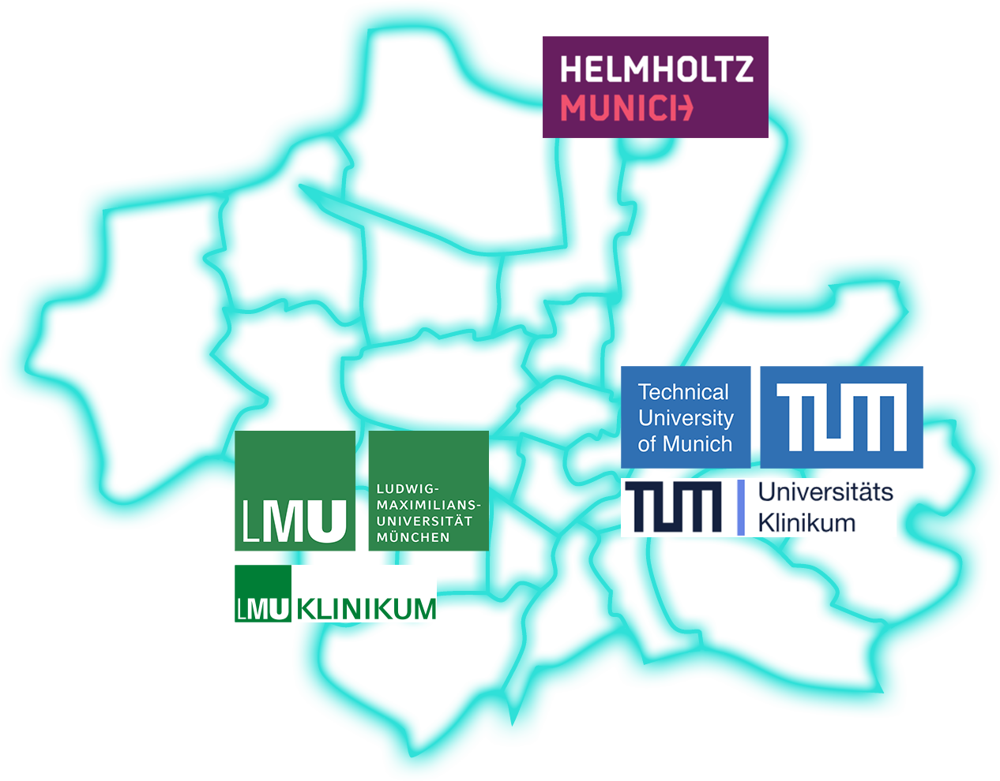
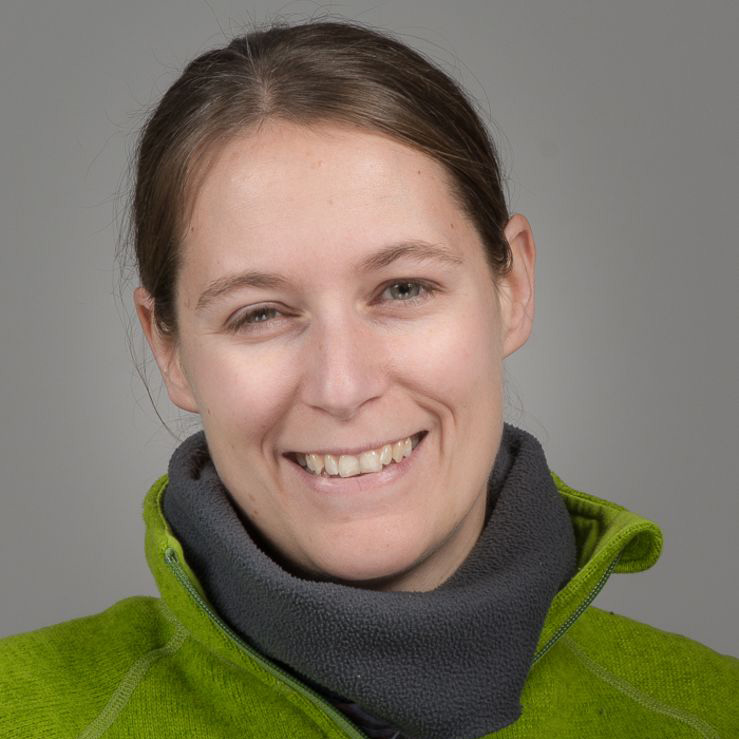

Dr. Paolo Casale
Helmholtz Munich
AI for Imaging Genetics
Munich Center for Computational PathologyThe Munich Center for Computational Pathology unites pathologists, AI scientists, and disease experts from TUM, LMU, and Helmholtz Munich to develop trustworthy AI for medical imaging, diagnostics, and translational research.
MCCP is building a shared web presence for computational pathology in Munich. Our work combines digital pathology, imaging genetics, and clinical data to create AI solutions that are transparent, robust, and ready for clinical practice.

Helmholtz Munich
AI for Imaging GeneticsLMU
PathologistLMU & Helmholtz
ScientistLMU
Scientist
TUM
PathologistHelmholtz Munich
ScientistTUM
ScientistTUM
Vet. Pathologist, ScientistHelmholtz Munich
ScientistLoading publications from Zotero group 6082964…
We are currently building up this web presence. Follow our progress as we expand research, publications, and clinical AI collaborations.